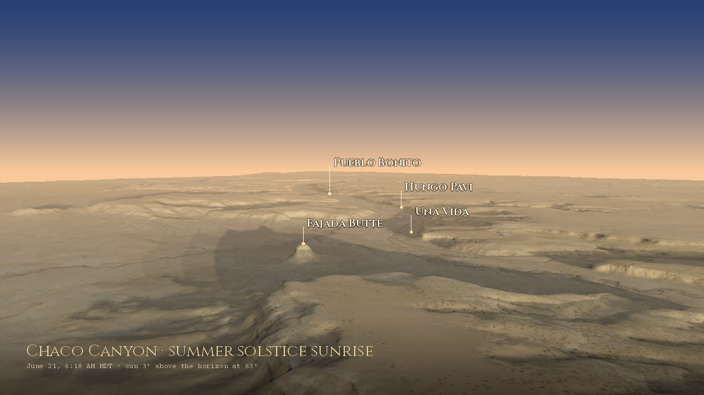
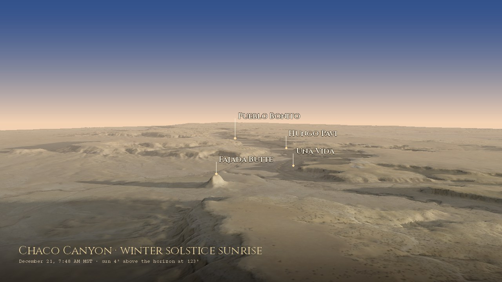
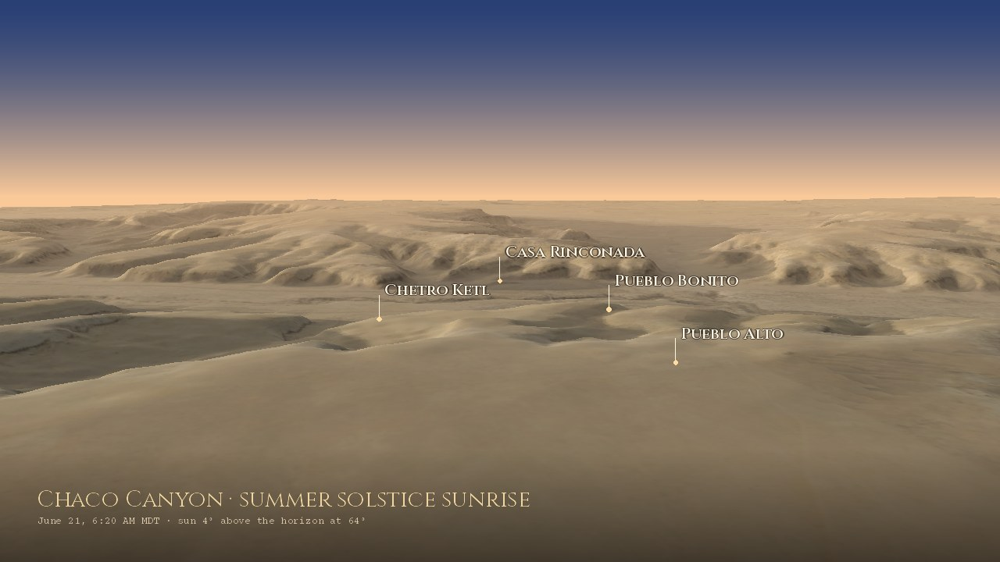

Summer solstice sunrise over Chaco Canyon: Fajada Butte, down the canyon past Una Vida, Hungo Pavi, Chetro Ketl and Pueblo Bonito, up to Pueblo Alto and west to Peñasco Blanco. USGS lidar, NAIP aerial photography, the Sun where it really is, rendered with forge3d.
Chaco's builders watched this sky. The canyon walls decide when the Sun actually reaches each great house, so everything here is measured against the skyline each site really sees, not a flat horizon.
Through the year the sunrise walks along the horizon: north to the summer solstice, where it seems to stand still for a few days, then south to the winter solstice and back. In historic times Pueblo sun watchers tracked those positions against notches and peaks on the skyline to set the ceremonial calendar. Here is the actual skyline from each site, from USGS elevation data, with every sunrise of the year on it.
The same view up the canyon past Fajada Butte, a few minutes after sunrise on the two solstices. In June the Sun comes up at about 63°, north of east, and throws Fajada's shadow west-southwest; in December it rises at about 123°, far to the south, and the shadow swings round to the west-northwest.



Terrain: USGS 3DEP elevation (lidar), 5 m. Colour: USGS NAIP aerial photography, 2022. The Sun is placed for the date and time shown with forge3d's solar calculator.
Near the top of Fajada Butte three sandstone slabs lean against the cliff. Behind them, two spirals are pecked into the rock. Around midday the gaps between the slabs let through narrow blades of light: at the summer solstice one passes through the center of the large spiral, at the winter solstice two frame it on either side, and at the equinoxes a smaller one crosses the small spiral.
The artist Anna Sofaer found it in 1977 while recording rock art. One of the slabs shifted in 1989, probably from erosion made worse by visitors, so the markings are no longer exact, and the butte is closed to protect what's left.
The Sun's rising point swings between the two solstices every year. The Moon's swings between its own limits every month, and those limits widen and narrow over 18.6 years. At a major standstill the Moon rises far north and far south of anywhere the Sun ever reaches; at a minor standstill, nine years later, it stays well inside them.
The same Fajada spiral is thought to mark this too, with shadows from the rising Moon reaching its edge at the major standstill and its center at the minor one. At Chimney Rock, a Chacoan great house 150 km to the northeast, the Moon rises between two stone pillars only around a major standstill.
—
From the selected site: where the Sun rises today, where it rises at each solstice, and the farthest the Moon reaches at a major standstill, all over that site's real skyline. Click any site to move the lines.